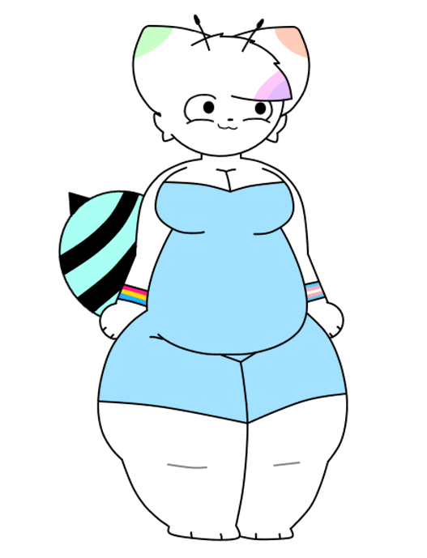

avery
basic info
Gender: Trans MtF
Height: 5'5
Weight: 200 lbs
Sexuality: Pansexual
biography
Avery (not to be confused with Ava i guess lol) is a bee and cat hybrid who's also quite colorful on some parts of her fur. She likes to yap and yap about her interests and gets really excited if something interests her. Apart from that, she's just pretty.